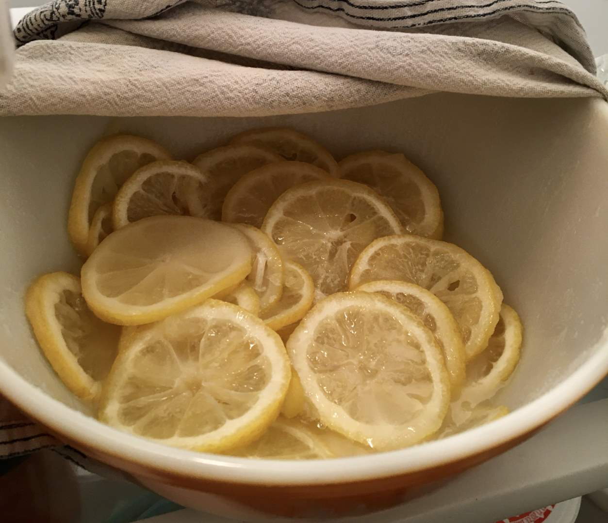

Pie 12: Shaker Lemon
2023-09-15Filling recipe from 101cookbooks.
Crust recipe from 101cookbooks.
Taste:
Difficulty:
Vibes:
Suggested pairing: Santa Fe soup
Here’s a classic, capital-P Pie for all you lovers of crust and/or lemons. This week we made a Shaker lemon pie with a double crust. This variety is frugal compared to a classic lemon or key lime custard pie. Instead of just the zest and juice of the lemons, the entire lemon is used. I (Ben) admit that I had my doubts, but the pie turned out very well--at least in the filling taste department.
That tasty filling is a sort of cross between marmalade and custard. Katie Beth started with 4 whole lemons and sliced them into thin rounds. She mixed in sugar and refrigerated the mixture overnight to macerate (a culinary term that describes a multi-hour process of softening things in water) in their own juice and absorb sweetness. Some of you might be willing to eat an unsweetened lemon pie but neither of us have yet reached the requisite state of grace.

Katie Beth also made the dough for this double-crust pie. I was working on med school stuff at the time, which gave her an opportunity to make her first pastry crust for this project. Unfortunately, in a moment of forgetfulness she stored the dough in the freezer overnight. The next day we realized this and postponed our plan to bake the pie by a day, giving the lemons a total of 48 hours to macerate.
On the second day our roles swapped, and I finished the filling and crust while Katie Beth made soup. I used scissors to chop up the lemon rounds into bits remenasnce of orange marmalade and added eggs, vanilla, and salt to the filling. The eggs are essential to “gelling” the filling.
I rolled out the crusts and cut some vents into the top crust. There was quite a bit of crust left over so I made a few apple butter turnovers as a snack.
At this point you have to really squint to see the "Lemon!" cuts in the center. That's problem with having a yellow filling. The letters would have stood out more boldy with a cherry filling. Yet more sadly, we did have some crust collapse during the baking process. Somehow the crust slipped in off the rim of the pan. Perhaps buttering the pan was a mistake as it didn’t let the crust grip the glass. After letting the pie cool for at least two hours I sliced into it and was pleased to realize that whatever the damage to the crust integrity, the bottom held up and had not become soggy. The taste was tart but not overly so. Katie Beth had burned her tongue that morning and so found it a bit more painful than me. A gluten-free friend tried the filling and also pronounced it delish. Overall, it was good pie work and we were satisfied.